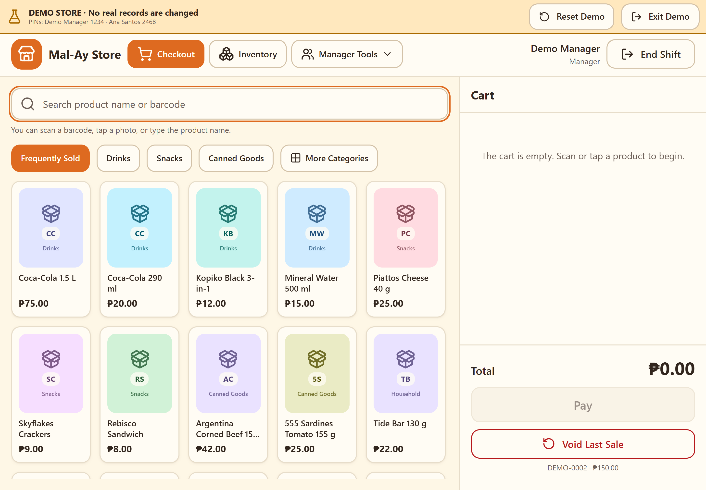
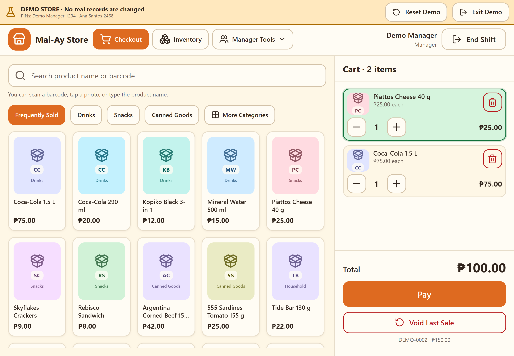
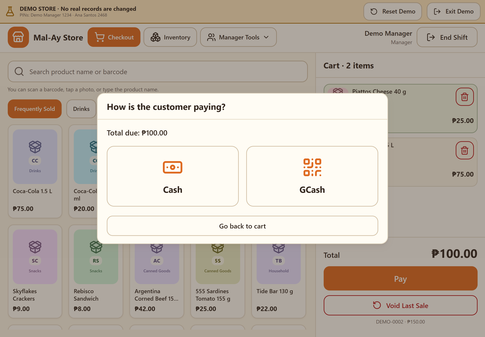
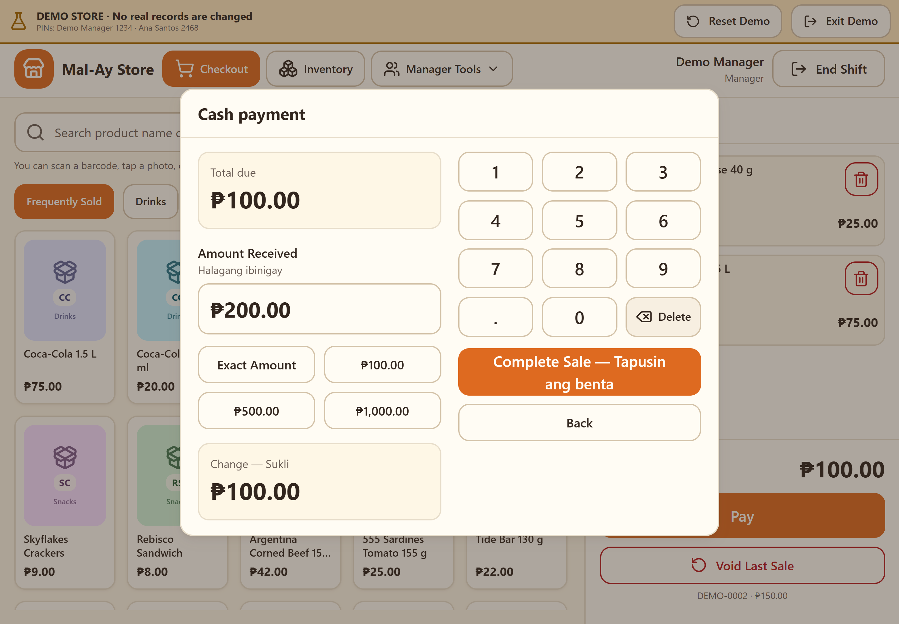
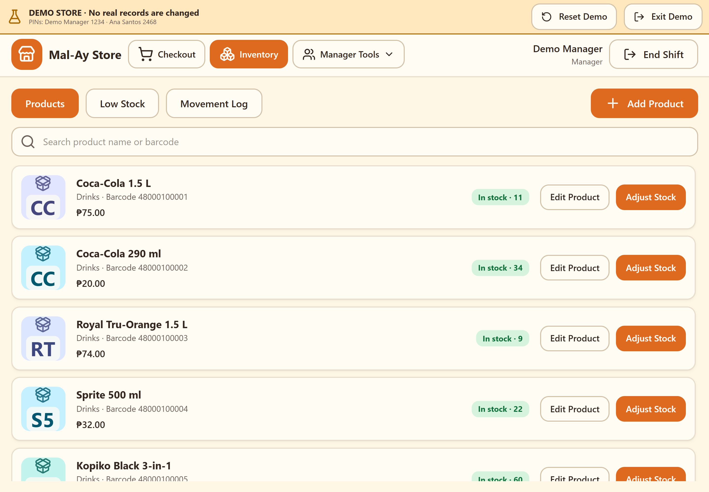
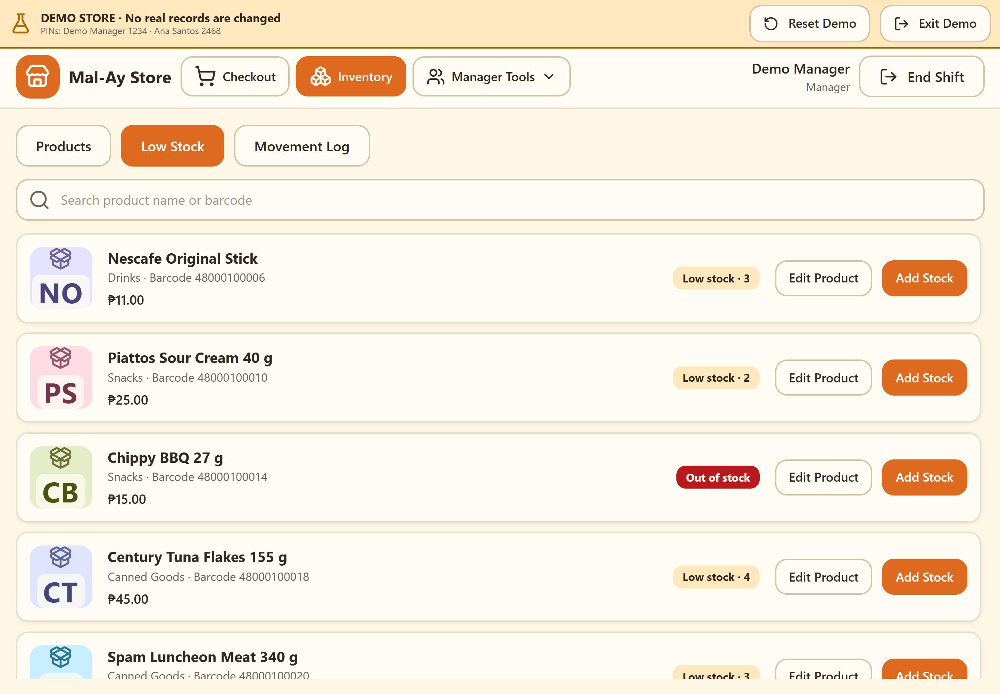
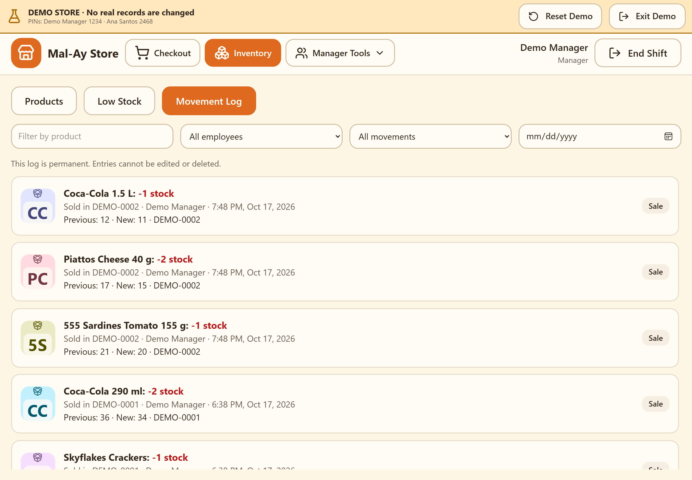
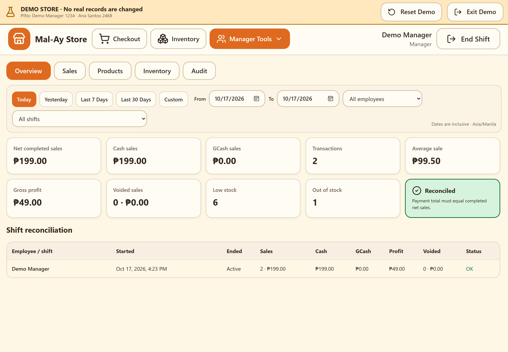
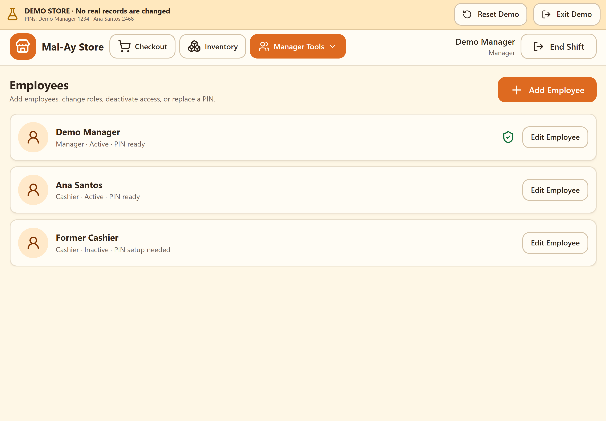
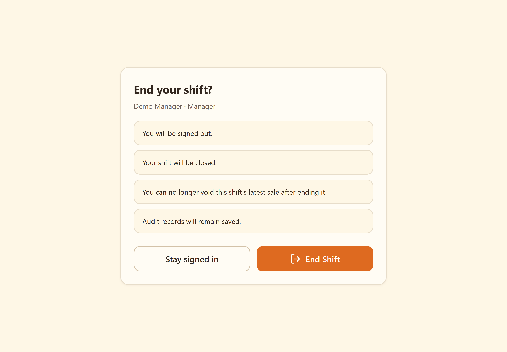

01. Everyday selling, made simpleFind products by name or barcode, browse familiar categories, and start a sale from one clear checkout screen.Download PNG
02. See every item. Know every total.Review quantities, prices, and the running total in a clear cart before taking payment.Download PNG
03. Give customers a choiceChoose Cash or GCash from a straightforward payment screen that keeps the sale total in view.Download PNG
04. Clear totals. Confident change.Enter the amount received and see the change immediately, with a large keypad and Filipino helper labels.Download PNG
05. Your products, organizedReview product prices and stock levels, edit product details, and adjust inventory from one practical workspace.Download PNG
06. Know what needs restockingBring low-stock and out-of-stock products into focus so your next replenishment starts with a clear list.Download PNG
07. Keep stock changes in viewReview a permanent movement history with product, employee, date, and movement-type filters.Download PNG
08. Understand the day’s salesReview completed sales, payment totals, voids, and stock indicators with date and employee filters.Download PNG
09. Manage your store teamKeep employee access organized with manager and cashier roles and employee PIN controls.Download PNG
10. Finish the shift with clarityConfirm shift closure with clear reminders about signing out and keeping audit records saved.Download PNG